Github Useage
Written 03/01/2021
I used Github for version control of my website, reflectively I think that my Github use could be a lot better than it is currently.

I am pleased with the amount of commits in my project. I think it is good that I have a large amount of commits as it gives me lots of versions of my code to choose from should somehting go wrong. This allows me to roll my code back to a version before with only small amounts of code changes, this means I wouldn't lose a lot of work if this happened and I wouldn't have to spend as much time to get back to the stage I was before my code broke. Having lots of frequent commits also means if I do have to roll back to an earlier version it is more than likely only to fix a singular problem this means there is a smaller risk of me missing some code I had before the roll back and then becoming frustrated because I cannot figure out what has changed between versions.
However having many commits is only effecitve if they are well named. They need to be well named so it is easy to find specific pieces of code I am looking for.
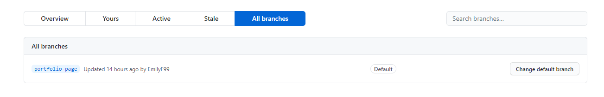
Reflectively my branch use was poor. I intially tried to make branches for each page I made, however I became confused and merged them all into one master branch. Out of all my areas for improvement I would highlight Github as a main improvment area as branches are really important to know about when it comes to version control. I definetly could have saved time by having multiple branches and merging them, rather than having only one branch.


When I first started my project my commit names were vague and not very good. There titles were similar and did nto really tell me what changes were made. As shown in the first screenshot.
The second screenshot shows some of my commits later on. I think these commits are much better than the first screenshot as the titles are clear, in my opinion, on what ahs changed and the commits appear to be much more frequent in terms of the small amount of changes made.
I believe that my Github use has improved over time and these two screenshots clearly show that.
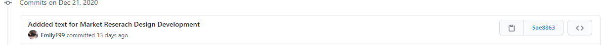
Some of my commits have typography errors within them. This in my opinion does not look good, and while it is an easy mistake, it can result in my work looking unprofessional and rushed. A improvement for the future would be to take more care with my commit titles and my typography.
HTML Validation
I used the Markup Validation Service by W3C (2020) to validate my HTML
Contact HTML
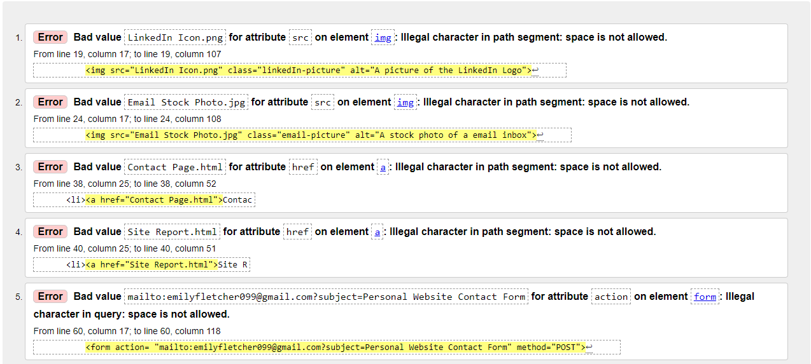
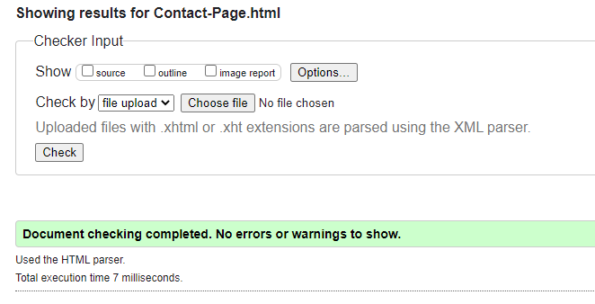
Originally my code would not validate due to there being spacing in my image titles, this was a problem that occurred on most of my HTML files and was an oversight on my part as I hadn't considered that there couldn't be spacing.
The validator also flagged my links to other pages. This was because these also had a space in them, so I had to go back and rename the files.
Lastly my form flagged as invalid.This was due to a spacing issue in the subject title.
After fixing these issues then my Contact page validated.
CV HTML
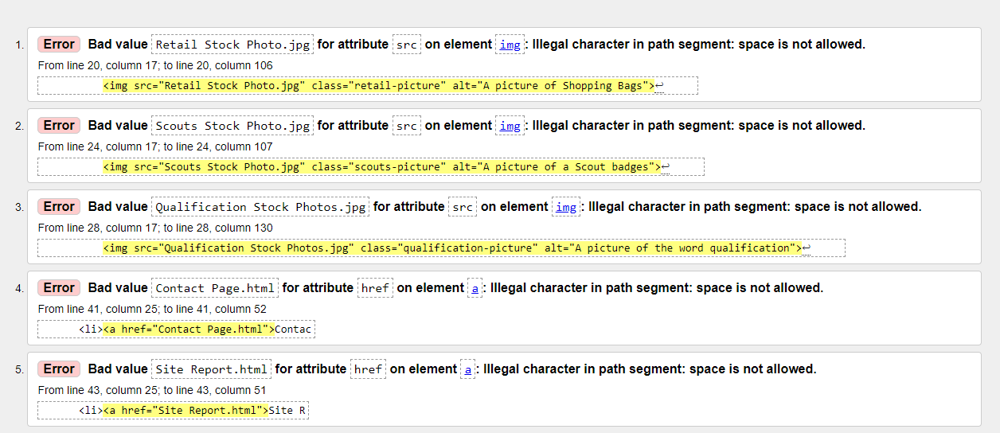
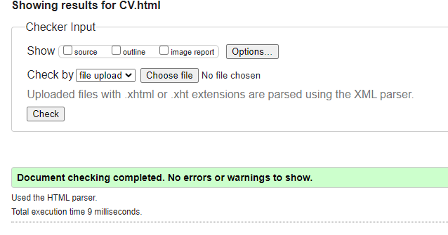
The same errors as before occured in this HTML file, once fixed, in the same way as before, the HTML then validated.
Index HTML
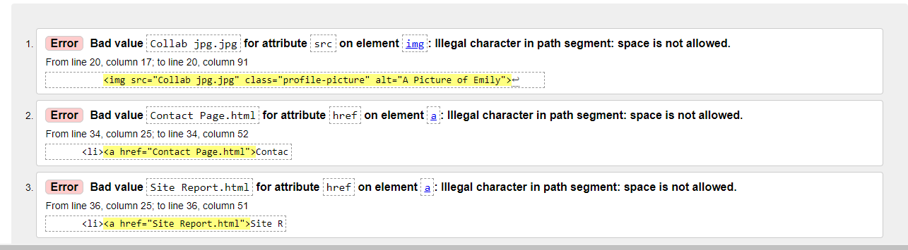
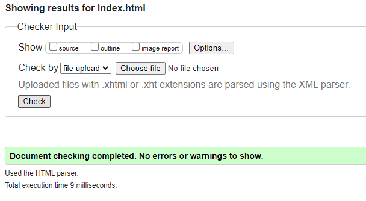
The same errors as before occured in this HTML file, once fixed, in the same way as before, the HTML then validated.
Portfolio HTML
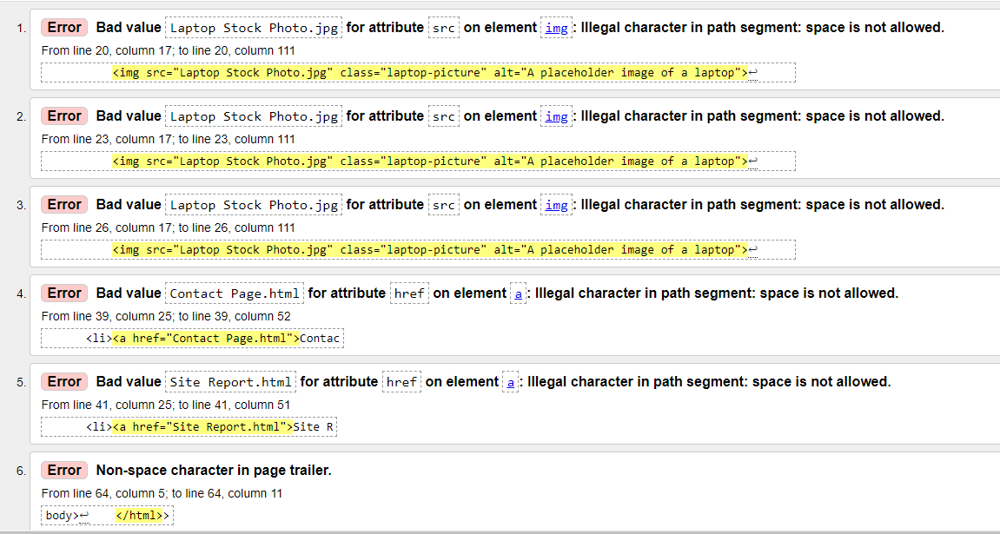
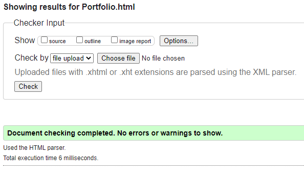
Most of the same issues on this page were the same as previous. However there was an extra issue this time. On my closing html tag I had an extra > this meant my code would not validate. Once removed my code validated fine.
Site Report HTML
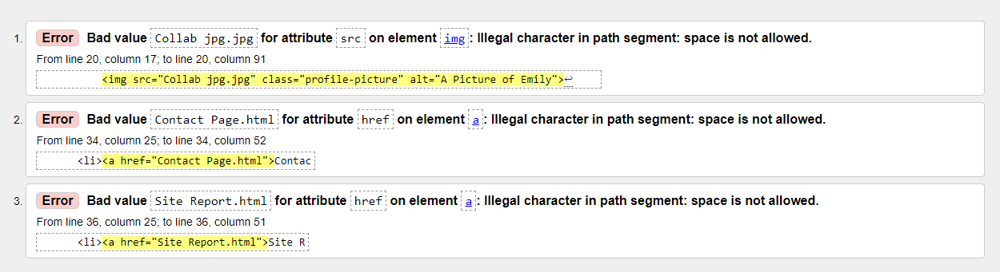
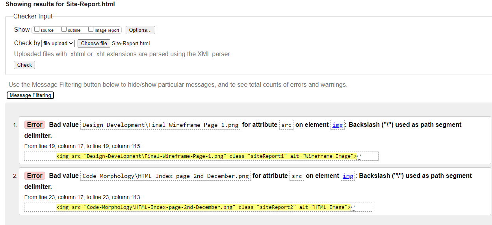

Initially my code had the same problem as before relating to spacing and names, however when I fixed this I had a different set of issues with my validation.
The second time my code failed to validate is because I had done some file organisation and put my screenshots into sub-folders. When you copy a file that's in a sub-menu using relative path a backslash is used asfter the folder the file is in. This is rectified by swapping the slash to a forward one. The images will stil be added and the code validates.
Reflective-Discussion HTML
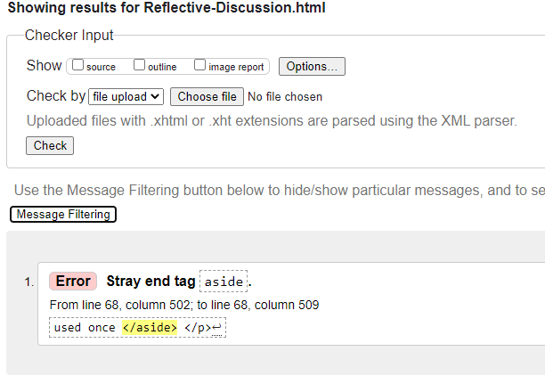
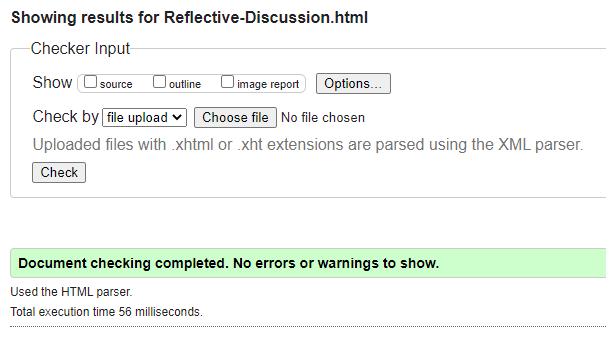
I only had one error in this file. This error occured because inside one of my p tags I had a closing aside tag that wasn't doing anything, once removed the code then validated.
Design Development HTML
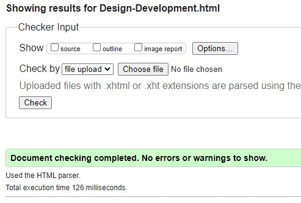
This HTML filed validated the first time, this means no errors were found by the validator.
Technical Development HTML
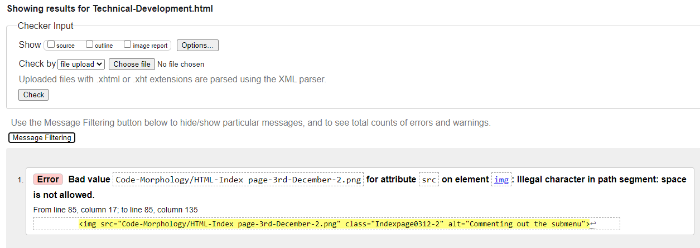
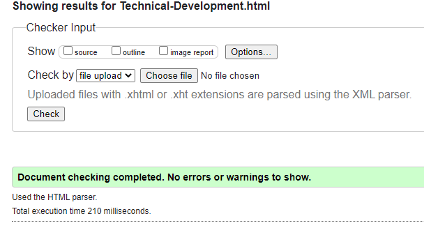
There was one error on this HTML file. This was a spacing issue that was fixed the same as previous.
Github and Validation HTML

CSS Validation
I used the W3C CSS Validation Service (2020) to validate my CSS.
Default CSS

There was no problems found with my default CSS.
Desktop CSS


The mobile and desktop was flagged for the grid. I think the problem with this was the quotation marks. However I removed all of the row sizes, as they didn't add up to 100% anyway and if my grid was not being read then auto row was being applied anyway. Once changed to auto none of my layout changed which proved my suspicions correct.
After this change my code validated.
Mobile CSS


My mobile CSS had the same issues as my desktop CSS and was fixed in the same way.